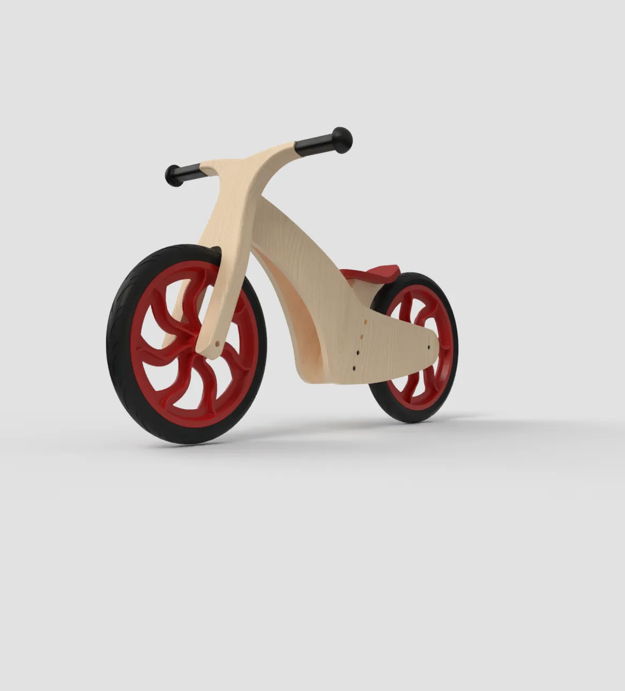
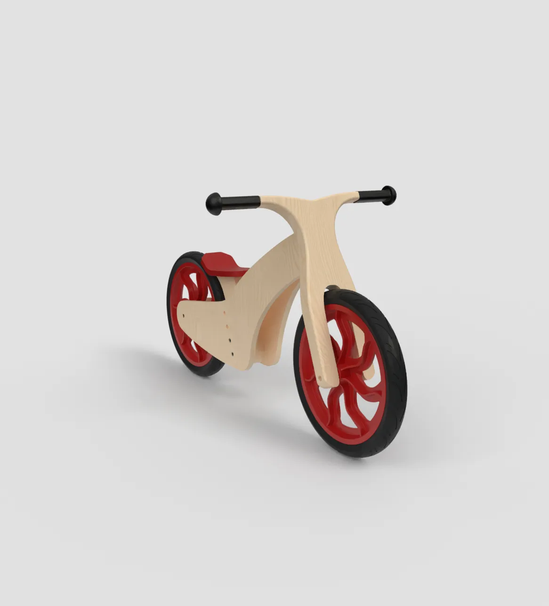
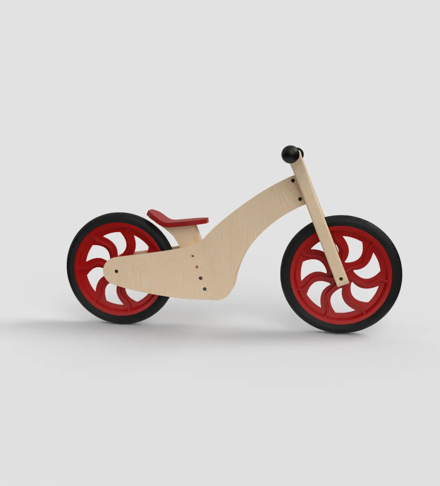
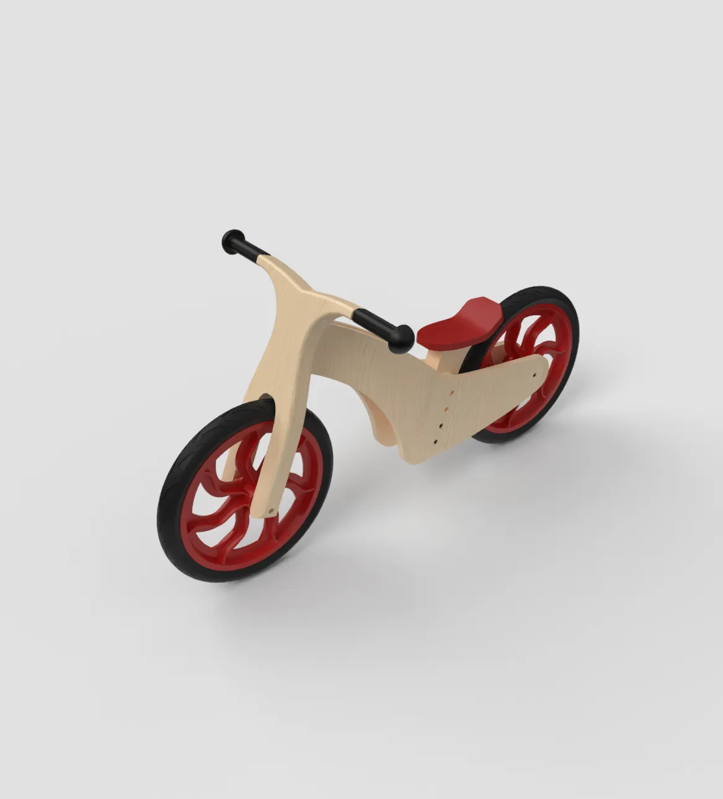
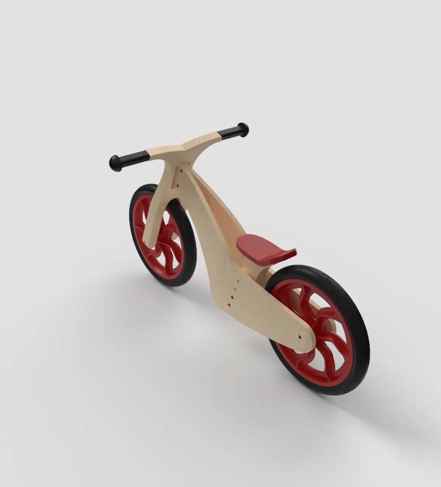
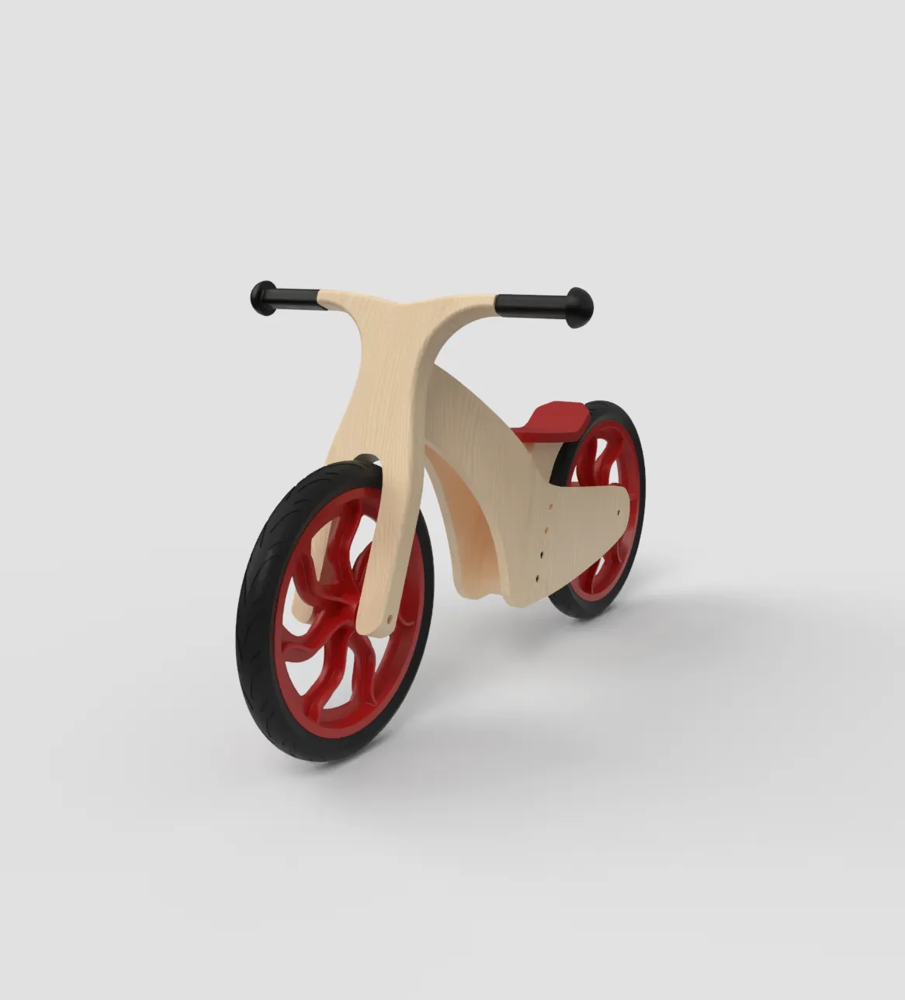
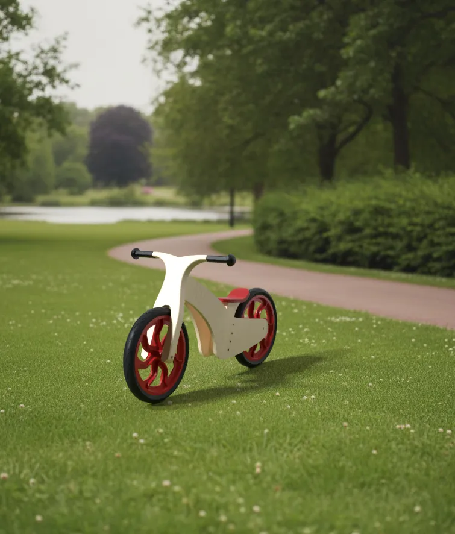

BALANCE BIKE
A Design for Manufacture group project in which we took apart a Janod Bikloon balance bike, analysed how it was made, and designed our own version with 35 parts instead of 60.

The Brief
We were given a children's balance bike for ages two to five and asked to find out which components, materials and processes had been used to make it. We then designed our own balance bike that applies what we learned, with a target retail price of £35 and 304.8mm wheels.


Analysing the Original
The original bike has 60 parts, 12 of them unique and 18 standard. Using the Lucas Hull method, which puts each part through a series of questions to justify whether it is needed, we scored it at 59% efficiency. Most of the non-essential parts were screws and fixings in the fork. The seat was the least efficient sub-assembly, with eight separate parts including 30 staples placed by hand. The wheel was the most efficient, with no spokes, screws or fixings.
The bike also uses five different plywood thicknesses and six screw lengths. The two holes at the base of the fork turned out to hold the plywood during CNC machining rather than serve any purpose on the finished bike. Packing the boxes into a 40ft container also wastes about 13.84% of the available space.


The Redesign
Our bike uses 35 parts, 19 of them standard. The seat is now a steam-bent birch plywood piece, with the foam, leather cover and staples removed. The steering pin is already fitted in the fork, so the only tool needed to build it is the supplied Allen key.
The wheels use 19mm ball bearings to reduce friction and roll smoothly, with a slightly thicker axle to carry the load. Steering is limited to 40° either side of centre, set with a SolidWorks sketch, to prevent the bike from jack-knifing. The frame uses two plywood thicknesses, 12mm and 30mm, instead of five.


Designing for Manufacture
The wheel rims and axle holders are injection moulded from high-impact polystyrene. We avoided undercuts, gave the ribs 3° draft angles so they release from the mould, and kept the 5mm wall thickness within the 6.35mm limit for the material. The tyres are EVA foam, which does not puncture.
The fork is CNC machined from birch plywood with no undercuts and a consistent wall thickness, and its fillets allow faster feed rates. A simulation of the frame under a 30kg load, above the 26kg rated maximum, showed a maximum deflection of 0.75mm.
Group: Alfie Brown, Nolan Ford, Yilong Wang, Mattie Waring and David Wiederstein. My sections covered function, packaging, sub-assemblies, main assembly, order of assembly, volume and transport costs, efficiency, and the flaws and improvements.
The main lesson was that in design you cannot always make the most aesthetically pleasing or functional solution. Sometimes a cheaper alternative must be used, and the project taught me to adapt processes I would otherwise have resisted.